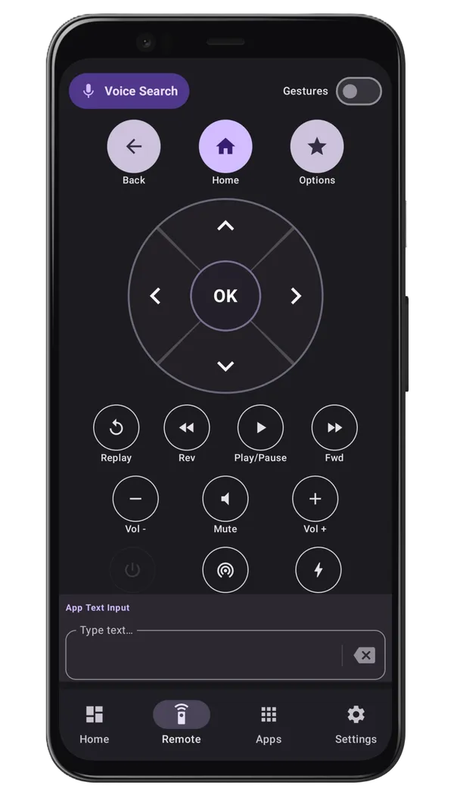

Aruk: A Smarter Way to Control Your Roku TV
Have you ever sat down to watch TV only to realize the TV remote is missing? Whether it's buried in the couch, the batteries died, or you just want a faster way to type and launch apps, a smartphone remote app can be a smarter alternative.

Watch the App in Action
Want to see how it works before downloading? Watch the quick demo below.
Frequently Asked Questions
Which is the best remote app for Roku TV?
The best app depends on your needs, but look for one with no ads on the remote screen, fast typing, and easy setup.
Will a remote app work with my TCL TV TV?
Yes, third-party remote apps generally work with all Roku TV brands including TCL, Hisense, and Onn.

Why Use a TV Remote App?
A physical remote works well for basic navigation, but smartphones offer capabilities that traditional remotes simply can't match. Using your phone as a TV remote allows you to:
- Control your Roku TV from anywhere in the room
- Type using your phone's keyboard
- Launch apps faster
- Create custom shortcuts
- Use voice search
- Access remote controls from your home screen
Many users initially install a TV remote app as a backup, but eventually find themselves using it more often than the original remote.
Features That Make Aruk: TV Remote Different
Intelligent Keyboard Input
Searching for movies and TV shows using a physical TV remote can be slow and frustrating. Instead of navigating an on-screen alphabet one character at a time, Aruk: TV Remote lets you use your phone's keyboard. Whether you're searching for a movie, entering a password, logging into a streaming service, or looking up a YouTube video, you can type naturally and much faster.
Physical Volume Button Support
When connected to your Roku TV, the app allows you to use your phone's physical volume buttons to control TV volume directly. There's no need to open additional menus — simply press the volume buttons on your phone while using the remote screen.
Quick Actions for One-Tap Automation
Quick Actions let you automate common TV tasks with a single tap — launch Netflix, open YouTube, navigate to a profile, or adjust volume settings. Create custom shortcuts that save time and simplify your viewing experience.
Voice Search
Voice Search allows you to search for content using your voice. Simply speak into your phone and let Aruk: TV Remote handle the rest — great for movies, shows, actors, and YouTube searches.
Gesture Navigation
Gesture Mode provides smooth swipe-based navigation. Instead of tapping directional buttons, navigate TV menus using simple finger gestures — many users find this faster and more intuitive.
Built-In Sleep Timer
The Sleep Timer feature lets you schedule when your TV should stop playing, helping conserve energy and preventing shows from running all night.
Easy Roku TV Setup
Getting connected should be simple. The app supports multiple connection methods.
Automatic Device Discovery
In most cases, your Roku TV appears automatically as long as your phone and TV device are on the same Wi-Fi network. Simply select the device and start controlling your TV.
Manual IP Connection
If automatic discovery isn't available on your network, you can manually connect using your TV TV's IP address as a reliable backup method.
Connection Troubleshooting
If your TV device isn't responding to mobile apps, try this:
Settings → System → Advanced System Settings → Control by Mobile Apps → Network Access → Permissive
Upgrade to Pro for Even More Convenience
Home Screen Widget
Control your Roku TV directly from your Android home screen without opening the app.
Ad-Free Experience
Enjoy an uninterrupted remote control experience without advertisements.
Unlimited Keyboard Usage
Type freely whenever you need it without restrictions.
Is a TV Remote App Worth It?
For many TV users, the answer is yes. A TV remote app can serve as a backup remote, a faster typing tool, a convenient daily remote, and a troubleshooting solution when physical remotes fail.
Final Thoughts
Whether you've lost your TV remote, need a backup solution, or simply want a more convenient way to control your TV, Aruk: TV Remote provides a modern alternative to the traditional remote. With features like intelligent keyboard input, voice search, gesture navigation, quick actions, sleep timer support, and home screen widgets, it can make controlling your Roku TV easier and faster.
Learn more: https://smartremotelabs.github.io/